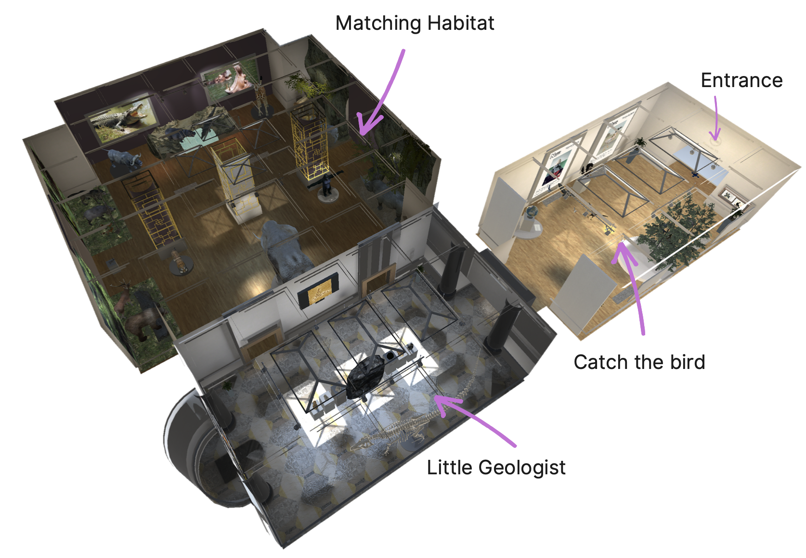
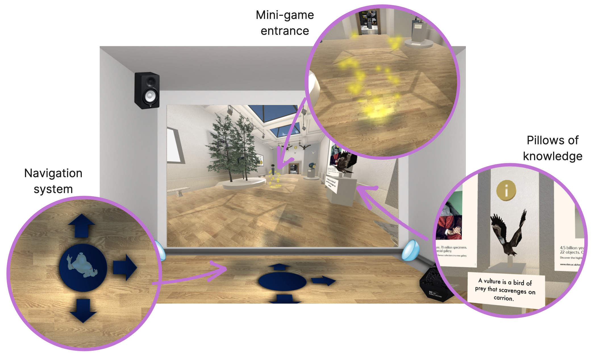

MuseX is an interactive Multi-Sensory Environment (iMSE)
that offers an immersive learning experience to the primary schools’ children and an opportunity to the teacher to make the teaching proposal more differentiated and enjoyable. MuseX aims at reproducing the typical environment of a Natural History Museum enriching it with interactive activities involving physical and non-physical assets. It has been implemented to work into the environment provided by Politecnico di Milano - i3lab’s MagicRoom. Thus, the interactions between the children and the software proposed are related to the technologies provided by the laboratory.

The Magic Room (MR) is an Interactive Multi-Sensory Environment (iMSE): a room-sized interactive installation equipped with digitally enriched physical materials and ambient embedded devices, capable to perceive the presence and the gestures of one or more human beings, and with the capability to react to these stimulations enabling the already cited embedded devices. On most of the cases iMSEs are used in primary education targeting especially children with Neurodevelopmental Disorders (NDD) relying on the embodied cognition’s milestone for which learning is both an intellectual and a physical process. The Magic Room applies in this field and, especially for the latest version of it, the vision is enlarged to all the children, with or without NDD. The aim of the project is to propose a disruptive idea of a museum, completely disconnected to the physical space and transferred to the iMSE. The children, into this interactive space, can learn, socialize, satisfy the curiosity and have fun. On the other hand, the primary school teachers, could differentiate the teaching proposal while proceeding to provide the educational contents and attract their pupils on alternative and more interactive environments, rather than the classic school’s room. In this scope we focused on the Natural History Museum in which children could interact with many types of rocks, birds, and various types of habitats’ dioramas: applying what they did learn at school and learning new things.
Museum navigation
Here the activity that embraces all the other mini-games is presented.
We called it "Navigation": in order to remind that the movement inside the museum is an adventure itself.
Indeed, during the Navigation, the child can rotate the displayed visual of the front wall through
a drag-and-drop gesture in order too discover every secret that the muesum hides under the hood such as mini-games,
dioramas and informational panes distributed around the museum.
To move inside the MuseX, a child has to be elected among the ones in the class and has to stand inside
a blue circle projected onto the floor and do a step following the direction suggested
by the projected arrows (see the next page for more details).
When she/he will return back to the circle, the animation will begin.
The points of the MuseX in which there is a mini-game to play, are visible by an animation.
When the class is virtuallly into those points, a star will appear on one of the 4 directions and,
by stepping over the star such as described before for the movement, the mini-game will start.
The Navigation system is based on a set of software components called "Waypoints".
Without entering into the details of the implementation it is important to underline that there are only a set of pre-defined positions in which the child can choose to move.Finally, while the Navigation occurs, there are spots in the virtual environement, identified with a "i" icon, that can contain additional contents (see the image below) such as informations about the animals in the dioramas or something related to their feedings or habitats. To interact with this pillows of knowledge the children has to do a grasp gesture in the direction of the icon.

Minigame 1: Matching the habitat
The aim of this activity is to test how much children know about animals and their natural habitat. This activity is based on a competition between two teams, namely Team A and Team B. To set up this activity the teacher is required to divide the students in this two teams. The splits is done without any equipment support, just asking the students to move to the left part of the Magic Room for Team A and to the right part of the Magic Room if a child is assigned to Team B. Two sets of tagged card are prepared for the two teams, each set is identified by a different color and the name of the team on the back and contains both card representing animals and also habitats. When the activity begins, Emi (the main character of the experience - a guide) explains shortly what the children have to do: each teams has to discuss and came up with matched animals and habitat cards. When an agreement is reached by the team member, a team spokesman stands up and scans the coupled animal and habitat card. If the match is correct, the team gains a point. To win, a teams has to reach five points in a given time (10 minutes), displayed in the interactive floor as a timer counting to zero. When a correct match is submitted the room turns green, a greetings sound is played, a green tick is showed in the front wall, and the animal matched appears in its natural habitat. Habitats are displayed on both the interactive wall and floor, and when an habitat card is scanned, the view moves from one habitat to the other. When an incorrect match is submitted, the room turns red and a failure sound is played while the interactive wall shows a red cross. If two animal cards or two habitat cards are scanned together, the room turns red, an error sound is played and an error message shown on the floor. If neither one of the teams reaches five points before the timer expires, the room turns blu, an alarm is played for a few seconds and the bubble machine starts. In this case, the team with more points wins.

Minigame 2: I'll catch you big bird!
In this activity the children will learn how to recognize the species of some birds by their aspect, then they will learn some information about the behavior of the recognized birds. At the beginning Emi explains briefly the activity and asks for a volunteer to stand up in the middle of the magic room. Then the interactive wall shows a forest background and a different type of bird flying in the environment. Moreover some clues are projected on the interactive wall so that the volunteer can guess the specie of bird to catch. The game is divided into 6 rounds, each round is dedicated to a specific bird projected in the scene. The volunteer can walk on the suggestions boxes projected on the wall in order to read some information about the bird to catch in the current round. There is also a special clue that will reproduce the sound of the bird. So, the volunteer takes a choice and selects the chosen bird by pointing at it and acting the grasp gesture. If the answer is correct the Magic Room turns green, the caught birds is highlighted with a particles effect , a sound of victory is played. Otherwise, if the answer is not correct the MR turns red and Emi encourages the student to try again. When the child has caught all the six birds, he reaches the end of the game, Emi congratulates with them and they can go back to the Museum.

Minigame 3: Little Geologist
This activity is a categorization game where children are tested on their knowledge about rocks and their origins. The activity begins with Emi explanation about how to play the game: in order to make the volano erupts, each students has to give the correct answer. The teacher asks for a volunteer to stand up in the middle of the interactive floor. A rock and three containers are displayed on the wall. The three containers correspond to three categories of rocks: igneous, metamorphic and sedimentary. The students is then have to categorize the rock. A visual representation of the rock texture and the rock name are displayed on the interactive floor, where an environment flooded with lava is shown. The categorization takes place with a grasp movement to select the virtual rock on the screen and a drag&drop movement in the container chosen. If the rock is correctly categorized the room turns green, a greeting music is played, the rock disappear in the container and the volcano raises its lava level. If the choice is incorrect the room turns red, a failure sound is played and an animation on the wall shows the container that refuses the rock with a shaking effect. Then an other student can try with an other rock. When the lava reaches it maximum level Emi encourages the children to be prepared for the eruption. The scene now changes and the volcano erupts with an animation showing the eruption on the front wall.